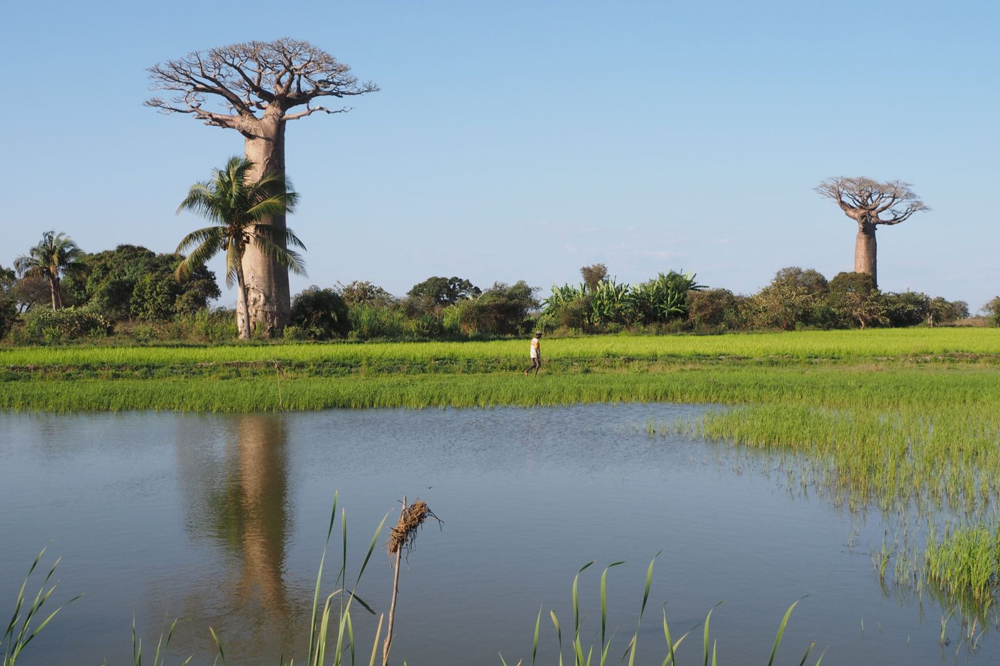
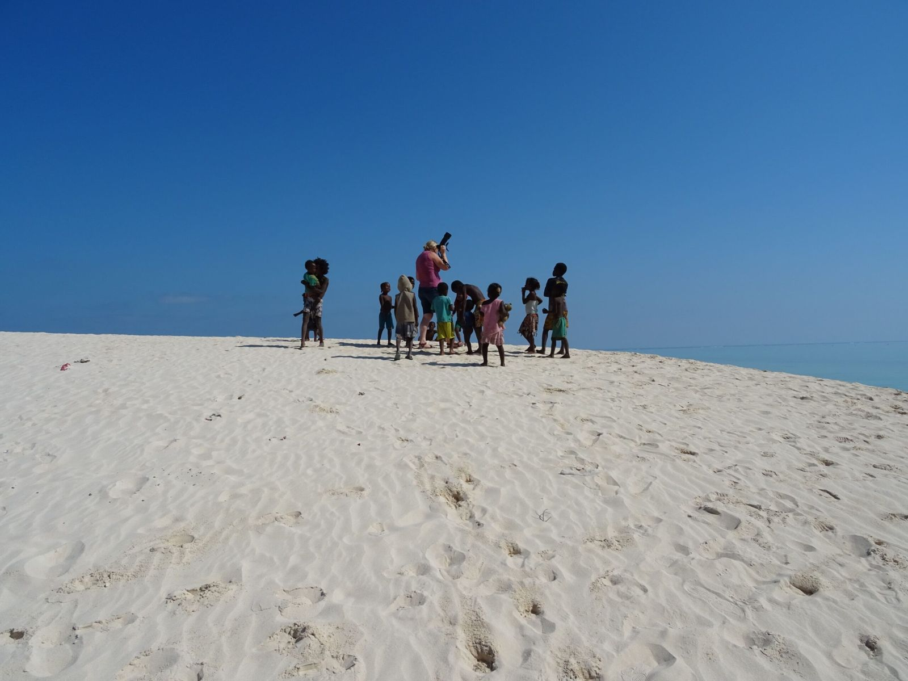
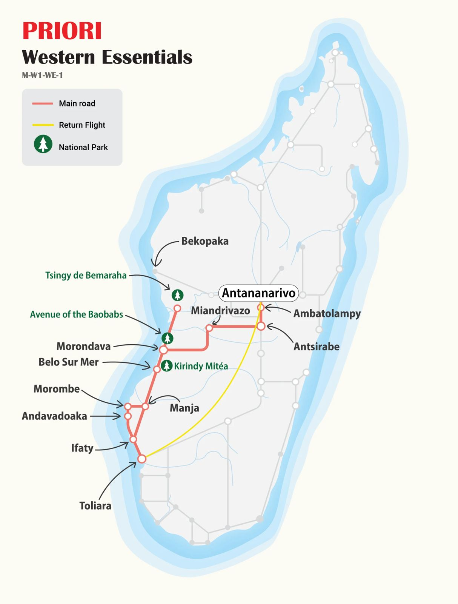

MG120 · West & South-West Circuit
The Essential West!
From the High Plateaux to the vertiginous Tsingy, from giant baobabs to the deserted beaches of the Mozambique Channel, the West of Madagascar in all its diversity.

After crossing the Malagasy High Plateaux, we head for the West Coast, so wonderfully diverse. We walk through the extraordinary limestone sculptures of the Tsingy, marvelling at the giant baobabs and endemic wildlife: the Fossa, that remarkably rare civet; expressive-eyed lemurs; and chameleons perfectly camouflaged along the path. An intense journey through the highlights of the West awaits us, rich in experiences and fascinating discoveries.
At a glance
The essentials
Itinerary Antananarivo → Antsirabe → Morondava → Tsingy de Bemaraha → Kirindy → Morondava → Manja → Morombe → Andavadoaka → Ifaty → Tuléar → Antananarivo
Nature, river-ferry crossings and dream beaches, three contrasting worlds for total immersion in Madagascar's wild West.

Not to be missed
The highlights
- The Tsingy de Bemaraha. Two full days in one of Madagascar's most extraordinary landscapes: gorges, vertiginous limestone pinnacles reaching 40 metres, gigantic chasms and underground lakes. From a suspension bridge, a breathtaking panoramic view over this stone microworld.
- The Avenue of the Baobabs. Madagascar's most iconic image, the giant silhouettes of baobabs etched against a sky ablaze with the setting sun. One of the most striking photographs on the entire island.
- The Kirindy dry forest. A unique ecosystem, rosewood, ebony, baobabs and medicinal plants. And perhaps the long-hoped-for encounter with the Fossa, that endemic carnivore so difficult to spot, or the red-fronted brown lemur.
- The Vezo coast and its fishing villages. From the deep blue of the sea to the white of salt lagoons, through the green of mangroves, a majestic and unforgettable coastline, alive with the rhythm of Vezo fishermen and their colourful pirogues.

Day by day
The complete itinerary
- Day 1 Flight from Switzerland Tonga Soa! Late-night arrival at Antananarivo airport. A driver greets us and takes us to our hotel in the city centre.
- Day 2 Antananarivo → Antsirabe We head south through the Malagasy High Plateaux. A stop in Ambatolampy, a town renowned for its recycled aluminium pots used across the country. Then on to Antsirabe, founded by Norwegian missionaries, home to many churches and craftsmen and dealers in precious stones.
- Day 3 Antsirabe, Lake Andraikiba We leave the city to visit Lake Andraikiba. This crater lake, nestled in the fertile and volcanic landscape around Antsirabe, is a favourite destination for excursions and swimming among Malagasy locals.
- Day 4 Antsirabe → Miandrivazo The journey continues through lush volcanic scenery, then into the foothills of the Ankaratra and Itremo massifs. In the afternoon we reach the picturesque little town of Miandrivazo, spread along a wide valley cultivated with tobacco and threaded by the Mahajilo river.
- Day 5 Miandrivazo → Morondava By road we follow the river to Mahabo, the little-known former capital of the Sakalava Kingdom. Citrus fruit, peanuts, tobacco and sugar cane all grow here side by side. In the evening we finally glimpse the sea at Morondava.
- Day 6 Morondava → Tsingy de Bemaraha We head inland northwards along sandy tracks through isolated villages. We cross the Tsiribihina river by ferry to reach Belo sur Tsiribihina. After a second ferry crossing, we arrive at the village of Bekopaka at the entrance to the Park.
- Day 7–8 Tsingy de Bemaraha Two days in one of Madagascar's most extraordinary landscapes: gorges, vertiginous limestone pinnacles up to 40 metres high, gigantic chasms, underground lakes and narrow watercourses. Hikes through the forest and across the Tsingy. From a suspension bridge, a truly stunning panoramic view over this stone microworld.
- Day 9 Tsingy de Bemaraha → Kirindy On to the dry forest of Kirindy! Along the way, we may catch a glimpse of the red-fronted brown lemur (Eulemur rufifrons), or even the rare Fossa, that endemic carnivore so hard to come across.
- Day 10 Kirindy → Morondava, Avenue of the Baobabs We explore another section of the Kirindy forest and its unique ecosystem: rosewood, ebony, baobabs and medicinal plants. At midday we depart for Morondava and its famous Avenue of the Baobabs, a spectacular landscape as their giant silhouettes are etched against the sky set ablaze by the setting sun. One of the most popular photographs in all of Madagascar.
- Day 11 Morondava → Belo sur Mer The journey continues along the coast southwards to the peaceful Belo sur Mer. Swimming is possible, or we can watch craftsmen using traditional tools to build wooden cargo vessels, elegant sailing ships that will go on to ply the Mozambique Channel.
- Day 12 Belo sur Mer → Manja Through the arid western landscape we cross vast endless savannahs and villages where time seems to have stood still. Our circuit takes us to the quiet village of Manja, known for its cattle market.
- Day 13 Manja → Morombe Along the delta plain of the Mangoky river we head towards the coastal town of Morombe and its colourful fishing boats. Our travelling companions: thorny forests and baobabs as wrinkled as old barrels.
- Day 14 Morombe → Andavadoaka Our journey continues along a breathtaking stretch of the West coast: the deep blue of the sea, the white of salt lagoons, the green of mangroves and thorn forests. A majestic and unforgettable spectacle.
- Day 15 Andavadoaka → Ifaty We continue through a strange landscape between sea and savannah, passing through many Vezo fishing villages before reaching Ifaty.
- Day 16 Ifaty, Beaches, diving & turtle village Ifaty and its beaches invite us to swim or dive in its crystal-clear waters. We can also watch birds in the surrounding forest or visit the turtle village.
- Day 17 Ifaty → Tuléar → Antananarivo After a final breakfast facing the sea, we depart for Tuléar where we board a flight to the capital. Back up to the High Plateaux.
- Day 18 Antananarivo, Last day Tana invites us one last time to savour its charms: final shopping at the craft market, or one last taste of zebu meat, before heading to the airport in the evening.
- Day 19 Return flight Our plane takes off after midnight. Veloma Madagasikara , farewell, Madagascar.

PRIORI M-W1-WE-1